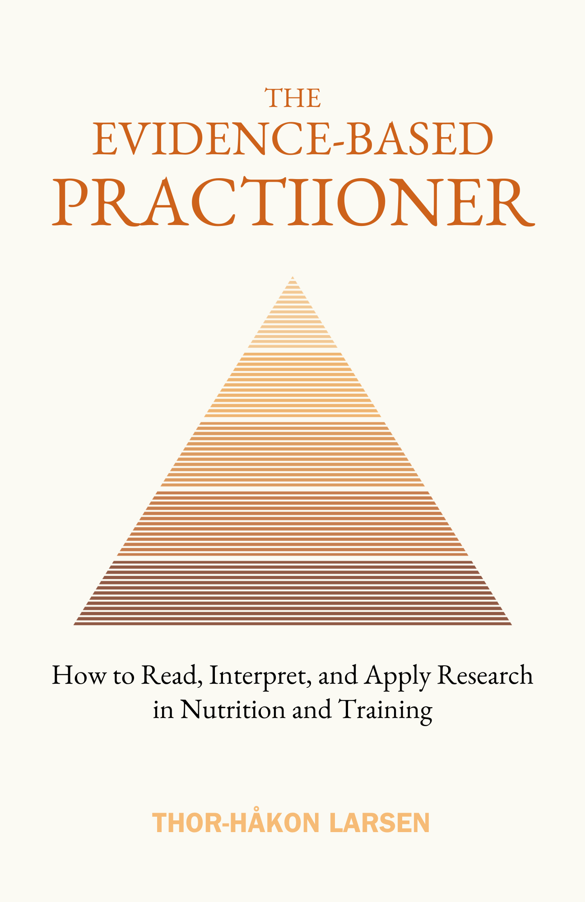

The Evidence-Based Practitioner
How to Read, Interpret, and Apply Research in Nutrition and TrainingHvordan lese, tolke og anvende forskning innen ernæring og trening
A new study says high-protein diets damage kidneys. Another says they’re perfectly safe. Your client is waiting for your recommendation. Most coaches pick the study that matches their bias. The best coaches know how to evaluate both — and give a recommendation calibrated to their specific client.En ny studie sier høyproteinkost skader nyrene. En annen sier det er helt trygt. Klienten din venter på anbefalingen din. De fleste coacher velger studien som matcher deres bias. De beste coachene vet hvordan de evaluerer begge — og gir en anbefaling kalibrert til sin spesifikke klient.
About the BookOm boken
The Evidence-Based Practitioner is designed for nutrition coaches, personal trainers, and serious practitioners who want to move beyond surface-level science communication. Built on frameworks from Sackett, MacDonald, Helms, Fagerli, and Aragon, the book covers critical appraisal, Bayesian decision-making, bias identification, and the skill of translating research into practical client recommendations. This is not a book of answers — it is a book about how to find them.
The Evidence-Based Practitioner er designet for ernæringscoacher, personlige trenere og seriøse utøvere som vil bevege seg forbi overfladisk vitenskapskommunikasjon. Bygget på rammeverk fra Sackett, MacDonald, Helms, Fagerli og Aragon, dekker boken kritisk vurdering, bayesiansk beslutningstaking, identifisering av bias og kunsten å oversette forskning til praktiske klientanbefalinger. Dette er ikke en bok med svar — det er en bok om hvordan man finner dem.
What You’ll LearnHva du vil lære
- How to read and appraise a research study in 15 minutes using a systematic methodHvordan lese og vurdere en forskningsstudie på 15 minutter med en systematisk metode
- The six statistical concepts that separate real findings from meaningless noiseDe seks statistiske konseptene som skiller reelle funn fra meningsløs støy
- Why most “study limitations” don’t invalidate results — and how to spot the ones that doHvorfor de fleste «studiebegrensninger» ikke ugyldiggjør resultater — og hvordan oppdage de som gjør det
- A practical Bayesian framework for making decisions when the science is uncertainEt praktisk bayesiansk rammeverk for beslutningstaking når vitenskapen er usikker
- How to extract transferable principles from specific studies and adapt them to individual clientsHvordan trekke ut overførbare prinsipper fra spesifikke studier og tilpasse dem til individuelle klienter
- The full framework applied to five real nutrition controversies: protein timing, meal frequency, keto, breakfast, and high-protein safetyDet komplette rammeverket anvendt på fem reelle ernæringskontroverser: proteintiming, måltidsfrekvens, keto, frokost og høyproteinsikkerhet
Who This Book Is ForHvem boken er for
For nutrition coaches, personal trainers, dietitians, and serious fitness professionals who want to move from “I read it on Instagram” to “here’s what the evidence actually shows and why.” Also for students in exercise science, sports nutrition, or public health who want a practical bridge between academic methodology and real-world coaching.
For ernæringscoacher, personlige trenere, ernæringsfysiologer og seriøse treningsprofesjonelle som vil gå fra «jeg leste det på Instagram» til «her er hva evidensen faktisk viser og hvorfor.» Også for studenter innen treningsvitenskap, idrettsernæring eller folkehelse som vil ha en praktisk bro mellom akademisk metodikk og coaching i praksis.
DetailsDetaljer
LanguageSpråk
EnglishEngelsk
GenreSjanger
Research & MethodologyForskning & metodikk
ComparableSammenlignbare
Bad Science (Goldacre), The Art of Statistics (Spiegelhalter), Thinking in Bets (Duke), The Muscle & Strength Pyramid (Helms)
Stay in the LoopHold deg oppdatert
Get notified when this title is available.Få beskjed når denne tittelen er tilgjengelig.
SubscribeAbonner